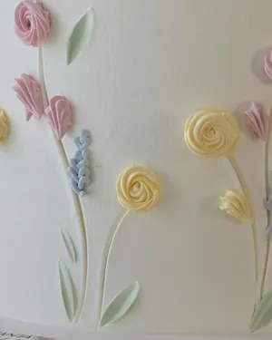
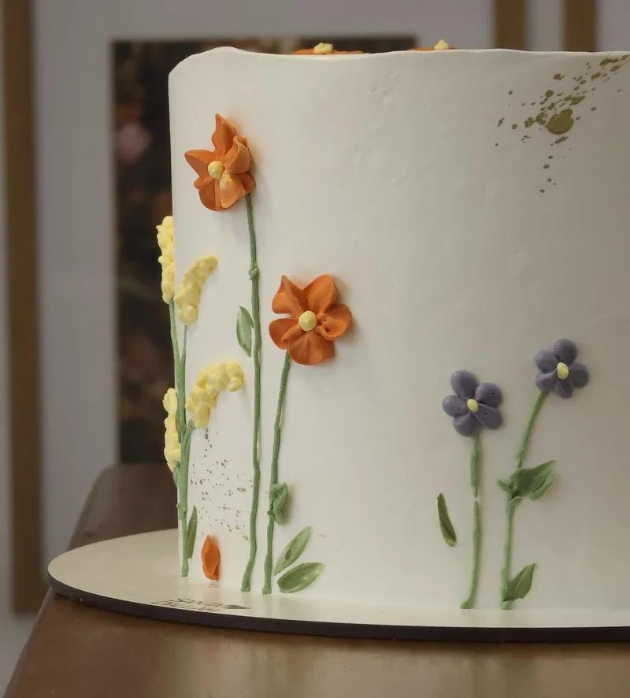
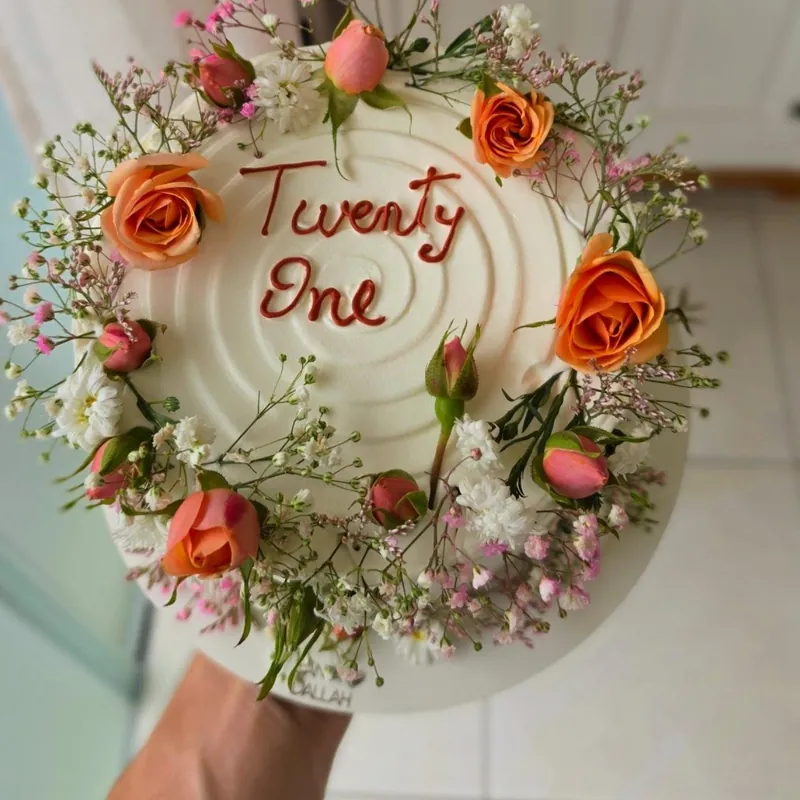
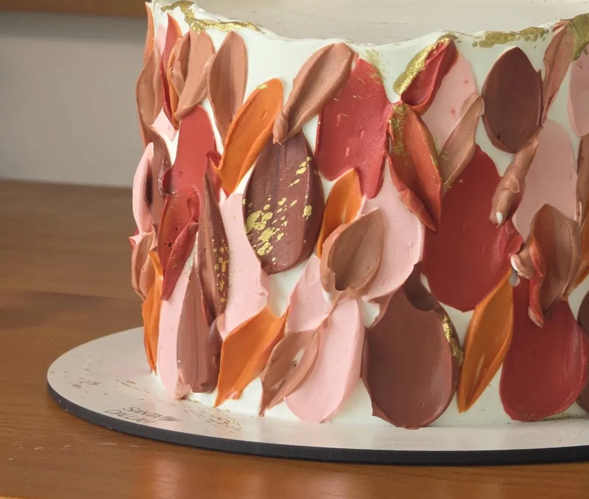
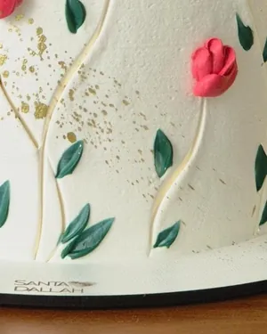

Bolos floridos
Flores na lateral, no topo ou em coroa, nas cores da sua festa.
Encomendar um bolo florido




Escolha as cores do seu jardim
Mande a data e as cores que você quer. A conversa começa pelo WhatsApp.
Encomendar um bolo florido